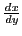
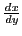

Next: Implicit functions Up: Rules for differentiating standard Previous: Differentiation of Contents Index
Differentiate the following:
Solution. By XX ()
Solution. By XVIII (
 ),
),
Solution. By XXII ( ),
Formulas (5.1) for differentiating a function of a function, and (5.2) for differentiating inverse junctions, have been added to the list of formulas at the beginning of this chapter as XXV and XXVI respectively.
In the next eight examples, first find
 and
by
differentiation and then substitute the results in
and
by
differentiation and then substitute the results in
 (by XXV)
to find
(by XXV)
to find
 . (As was pointed out in §5.11, it might be possible to eliminate
. (As was pointed out in §5.11, it might be possible to eliminate  between the two given expressions so
as to find
between the two given expressions so
as to find  directly as a function of
directly as a function of  , but in most cases the above method is to be preferred.)
, but in most cases the above method is to be preferred.)
In general our results should be expressed explicitly in terms of the
independent variable; that is,
 in terms of
in terms of  ,
 in terms of
,
 in terms of  ,
in terms of
,
in terms of  , etc.
, etc.
; ; substituting in XXV, .
; ; substituting in XXV,

In the following examples first find by differentiation and then substitute in